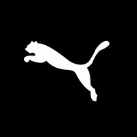

 op deze pagina ga ik je wat vertellen over puma en wat items die ik wel ok vindt. puma is een duits merk dat is opgericht door rudolf dasler in 1948 hij en zijn broer runden in 1924 een fabriek maar toen ze uiteindelijk splitsde in 1948 had zijn broer adi adidas opgericht. lees meer over puma
ik ga nu wat vertellen over wat samenwerikingingen van puma met beroemdheden.puma heeft bijvoorbeeld een samenwerking met rihana voor wat schoen. of een van de bekendere samenwerking met big sean die niet alleen schoenen heeft maar ook verschillende kledingstukken. maar sommige artiesten zoals young thug hernieuwen de oude stijl van puma in plaats van iets anders maken. ook werkt puma met verschilende spelers of teams van somige sporten zoals manchester city die tenues krijgen van puma.max verstapen en het redbul team wordt ook gesponsored door puma diet zie je terug in de merch. lees hier meer puma
in dit artikel laat ik je wat van de populairste items en die ook wel goedt vindt
nike air force 1's
nike air tech suit
jordan 1's
jordan 4's
dit is zo'n beetje alles wat ik te vertelen heb over puma. dankuwel voor lezen.